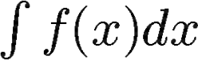

Solving Integrals (Antiderivatives)
Indefinite Integrals
Just like when we derive functions, we can integrate functions with a general formula. Integration can be a bit more complex, so this formula won't necessarily work for every function you encounter. For now, let's just focus on basic integration. Integrals are denoted using
To integrate a function, we use the formula
Note the + C at the end of the function. That C represents a constant number. Remember that deriving a constant will always yield zero. Therefore, when we integrate a function, it is impossible to know for sure if there would be a constant added or subtracted from a function. If this confuses you, keep in mind that adding a constant to a function only shifts a function! That number does not affect the slope, so we don't have to know its exact value. Don't forget to add the constant; most graders will deduct points if it's left out!
Integration is the literal opposite of derivation, so it may help to approach a function with the mindset of "What function would have this as its derivative?" In other words, reverse the steps of derivation!
Definite Integrals
Integration can also be used to find the value of the area between a function and the x-axis. These are called definite integrals. In these cases, you will be given values to plug into the function once it is integrated. These will appear near the integration symbol with the first value below the second. Once you've derived the function, plug in the values; subtract the result of plugging in the lower value from the result of plugging in the upper value.
If you are in an AP course and plan on taking AP exams, here is a bit of advice: you do NOT need to solve the function down to a single number. If you end up with an equation of constants, you don't need to go through solving it. The AP exam graders know that you understand how to add, divide, use exponents, etc. so it can be a big time saver on that AP exam to leave your answer as 1 + 2 * 3 instead of taking the time to solve it and write 7. This tidbit is a massive time saver and removes the possibility of making errors in arithmetic after you've integrated a function correctly.